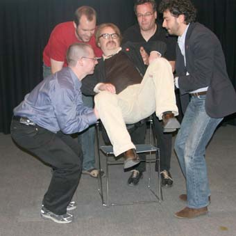

Italialainen taikuri, skeptikko, psykologi ja mysteerien Massimo Polidoro kävi toukokuussa Suomessa. Skepsiksen isännöimässä tilaisuudessa hän piti yleisöluennon tiedekeskus Heurekassa Vantaalla. Luento oli osa hänen Pohjois-Euroopan kiertuettaan, jota sponsoroivat mm. ”Center for Skeptical Inquiry” ja ”The Skeptical Inquirer” -lehti. Kiertueensa aikana hän vieraili myös Alankomaissa, Ruotsissa, Virossa ja Saksassa.
Paikalle Heurekaan saapui vain noin 50 henkilöä, joka johtui osaksi siitä, että valtakunnallinen päälehti ei julkaissut tietoa tilaisuudesta tapahtuma-palstallaan. Yleisönä oli lähinnä skeptikoita, vaikka parasta antia tilaisuudesta olisivat saaneet ns. tavalliset kaduntallaajat.
Polidoro kutsuu itseään mysteerietsiväksi. Kahdenkymmenen vuoden ajan hän on testannut epätavallisia henkilöitä kuten selvänäkijöitä, meedioita, kaivonkatsojia, Intian fakiireja ja ihmismagneetteja, joilla lusikat pysyvät kiinni rintakehässä aina siihen asti, kun heitä pyytää kumartumaan eteenpäin. Hän on tutkinut astrologiaa ja telepatiaa, käynyt spiritualistisissa istunnoissa, kummitus- ja poltergeist-taloissa, hautausmailla ja viljakuviopelloilla.
Myös muut kuin niin kutsutut paranormaalit ilmiöt kiinnostavat häntä ja hänen edustamaansa ryhmää CICAPia (the Italian Committee for the Investigation of Claims of the Paranormal): esimerkiksi historialliset mysteerit, joita ei enää voi testata, mutta joista voi tehdä historiallista tutkimusta, kuten Nostradamus ja Harry Houdini.
– Jokainen tiedemies on itse asiassa mysteerietsivä, sillä hän tutkii asioita, joita emme vielä tunne.
Polidoron ja hänen ryhmänsä tutkimuksen fokus on muuttunut hiljalleen. Alussa he tutkivat lähinnä selvänäkijöitä ja profeettoja. Nykyään tutkitaan enemmän väitteitä, joita on paljon vaikeampi analysoida, mutta joissa samalla tavalla kuin ennenkin väitetään jotakin tutkimatta asiaa, esimerkiksi salaliittoteorioissa kuten JFK ja 911.
Taikuri ja kahlekuningas Harry Houdini (1874-1926) oli henkilö, joka sai Polidoron kiinnostumaan alasta. Houdinista tuli hänen sankarinsa, kun hän näki vuonna 1953 valmistuneen elokuvan ”Houdini”, jossa tätä kuuluisaa hahmoa näytteli Tony Curtis.
– Oli hienoa katsoa lapsena televisiosta, miten Houdini paljasti huijareita. Hänestä tuli minulle suurempi sankari kuin hämähäkkimies tai teräsmies, koska hän oli totta.
Houdini kiinnostui spiritismistä 1920-luvulla, kun hän yritti ottaa yhteyttä edesmenneeseen äitiinsä. Hän osallistui spiritualistisiin istuntoihin, mutta pettyi pahasti, koska taikurina hän pian ymmärsi, että tilaisuuksissa huijataan ihmisiä. Houdinista tuli skeptikko, joka alkoi taikuritaitojensa avulla paljastaa huijareita, jotka olivat onnistuneet hämäämään tiedemiehiä ja tutkijoita. Hän liittyi Scientific Americanin jäseneksi. Järjestö lupasi rahapalkkion sille meediolle, joka voisi todistettavasti esittää yliluonnollisia kykyjä.
Houdini esitteli paljastamiensa huijarimeedioiden temppuja esiintymiskiertueillaan sekä kirjoissaan ”The right way to do wrong” (1906), ”Miracle-mongers and their methods” (1920), ”A magician among the spirits” (1924) ja ”Houdini exposes the tricks used by Boston medium ’Margery’” (1924).
Polidoro unelmoi yhden päivän ajan, että hänestä voisi tulla samankaltainen kuin Houdini oli. Hän kiinnostui taikuudesta, harjoitteli ja teki temppuja ystävilleen. Taikatemppuja opetellessaan hän huomasi, että eräät ihmiset vieläkin väittivät, etteivät käytä taikatemppuja vaan tekevät ilmiönsä paranormaaleiden kykyjensä voimalla. Esimerkiksi Uri Geller väitti voivansa taivuttaa metallia mielen voimiensa avulla.
– Itse opin taivuttamaan lusikoita taikatemppujen tekniikan avulla, en huijaamalla.
Aluksi Polidoro oli kiinnostunut paranormaaleista kyvyistä, sillä jos ne olisivat todellisia, hän halusi oppia ne jonakin päivänä. Nopeasti hän kuitenkin huomasi, että mystisillä kyvyillään mainostaneilla ei ollut esittää ilmiöistään yhteneviä selityksiä. Hänen lukemissaan kirjoissa esitettiin paljon teorioita ja hypoteeseja, että parapsykologiset voimat saattoivat olla avaruudesta tai enkeleiltä, mutta koskaan niissä ei esitetty minkäänlaisia todisteita, joita voisi objektiivisesti tutkia.
– Ilmeni, että ikinä ei oltu tehty koetta, jossa paranormaalit ilmiöt esiintyisivät niin, että kokeen voisi onnistuneesti toistaa.
Asioita tutkiessaan Polidoro löysi itselleni uuden sankarin, amerikkalaisen taikurin James Randin. Hän oli kuin Houdini, pystyi vapautumaan mistä tahansa ansasta tai kahleista, mutta päätyi tutkimaan paranormaaleja ilmiöitä, koska huomasi – niin kuin Houdini – että kyseisiä ilmiöitä tuottavat henkilöt käyttivät temppuja, jotka olivat taikureille harvinaisen tuttuja.
Niinpä, kun Randi kerran oli elossa, päinvastoin kuin Houdini, Polidoro kirjoitti hänelle kirjeen, jossa kertoi, että on perustamassa Italiaan paranormaaleja väitteitä tutkivaa järjestöä. Randi innostui siitä, että eurooppalainen nuori henkilö on kiinnostunut tällaisista asioista ja ilmoitti, että haluaa tavata Massimon jonakin päivänä. Kolme kuukautta myöhemmin hän tuli Italiaan järjestön perustamisen tiimoilta. Muutaman päivän aikana Polidoro ja Randi tutustuivat paremmin. Sitten Randi teki ehdotuksen, josta Polidoro ei voinut kieltäytyä.
– Hän pyysi minut USA:han opiskelemaan paranormaalien ilmiöiden tutkimista.
Yhdysvaltoihin saavuttuaan Polidorosta tuli meedio. Ainakin hetkeksi.
Randi oli valmistelemassa Los Angelesissa tv-ohjelmaa, jossa testattiin paranormaaleja kykyjä. Ohjelmassa Uri Geller kertoi katsojille, että jotakin selittämätöntä tulee tapahtumaan hänen maagisten kykyjensä johdosta heidän kotonaan tv-lähetyksen aikana. Näin tietysti tapahtui. Ihmiset soittivat ohjelmaan ja kertoivat juuri sattuneista oudoista ilmiöistä.
Ohjelman juontaja kysyi Randilta, kuinka hän selittää tapahtuneet ilmiöt. Randi kertoi, että jotakin samanlaista oli tapahtunut vain muutama tunti sitten Phoenixissa, Arizonassa. Italialainen meedio Polidoro oli esiintynyt paikallisen radiokanavan ohjelmassa ja kertonut kuulijoille Gellerin tavoin, että jotakin kummallista tulee tapahtumaan ohjelman aikana. Näin tietysti tapahtui. Ihmiset soittivat ohjelmaan ja kertoivat kissan käyttäytyneen oudosti ja rikkinäisten kellojen alkaneen tikittää.
– Sitten Randi paljasti, että minä en ollut meedio, vaan kollega, skeptikko, jolla ei ole minkäänlaisia yliluonnollisia kykyjä. Olimme lentäneet samana päivänä Arizonaan tätä testiä varten.
Jos tv- tai radio-ohjelmalla on paljon seuraajia, on luonnollista, että kaikenlaisia ”kummallisia” asioita tapahtuu, kun ihmiset sellaisia odottavat. On tavallista, että valot sammuvat itsestään viereisestä huoneesta, mutta kun tällaista tapahtuu ohjelman aikana, jossa jotakin outoa on luvattu tulevan, tapahtuma tulkitaan mystiseksi. Kun katsoja poimii pöytälaatikosta vanhan kellon esiin, se saattaa hyvinkin käynnistyä hetkeksi, sillä useimmiten kellot eivät ole rikki, vaan lika estää niiden toimimisen.
– Ohjelman jälkeen ei ole ketään kelle soittaa ja ilmoittaa, että kello pysähtyi taas.

Kun Polidoro palasi USA:sta Italiaan, hän perusti paikallisen komitean tutkimaan paranormaaleja väitteitä. He tutkivat kymmeniä tapauksia, joissa ihmiset väittivät omaavansa paranormaaleja kykyjä.
– Suurin osa ihmisistä esittelee kykyään vilpittömin mielin. Joukossa on kuitenkin myös huijareita.
Huijarilta vaikutti alun pitäen nainen, joka väitti näkevänsä esineiden läpi. Hän tosin näki läpi vain määrätystä laatikosta, jonka oli tuonut mukanaan. Hän tiesi minkä värisen kortin kuka tahansa ulkopuolinen henkilö eri vaihtoehdoista laatikkoon asetti. Tempun selitys oli helppo. Kun nainen taikoi asiaa ja pyöritti laatikkoa käsissään, erästä laatikon sivua taivuttamalla hän pääsi näkemään kortin värin.
Polidoron ryhmä testasi myös karatemestaria, joka väitti voivansa tyrmätä ihmisiä ilman kosketusta itsepuolustuslajeista tutun chienergian avulla. Mestarin avustajat pyörtyilivät odotetusti, koska heidät oli suggeroitu tekemään niin kuin mestari ja karatekaverit odottivat. Polidoron apulainen pysyi pystyssä. Mestarin selitys epäonnistumiselle oli outo: ”Hän ei uskonut asiaan, joten hän piti kieltä suussaan väärässä asennossa, joka esti energian toimimisen. Myös, kun löin häntä, hän väänsi toisen jalan varpaitaan alaspäin, joten voima ei toiminut. Kun löin uudestaan, hän väänsi toisen jalan varpaitaan ylöspäin. Silloinkaan voima ei toimi.”
Eräs vilpittömältä vaikuttanut nainen väitti, että kun lautaselle rikotaan kananmuna ja hän asettaa kätensä lautasen päälle, muna ei mätäne vaan muumioituu viikossa. Väite oli sen verran erikoinen, että Polidoron ryhmä päätti tutkia sen. Asiaa tutkittiin niin, että ryhmä rikkoi kymmenen munaa lautasille ja nainen asetti kätensä yhden munan päälle. Muut yhdeksän käsittelemätöntä munaa olivat samaan aikaan eri huoneessa, koska nainen korosti vahvojen voimiensa voivan vaikuttaa niihin, jos ne ovat liian lähellä käsiteltävää munaa. Tulokset olivat yllättävät.
Naisen käsittelemä muna oli todellakin muumioitunut viikossa. Se oli menettänyt nesteensä ja kuivunut kasaan. Näin oli tosin tapahtunut myös kaikille muille yhdeksälle munalle. Jokainen muna näytti samanlaiselta.
– Kyseessä oli selvästi ilmiö, jopa erikoinen, mutta ei paranormaali sellainen. Näin vaan tapahtuu, kun muna jätetään huoneeseen lautaselle kuivumaan.
Ihmisten on todella vaikea myöntää, että he ovat väärässä. Munanainenkaan ei myöntänyt epäonnistuneensa. Hän vain totesi, että näköjään tämä mystinen kyky on meillä kaikilla.
USA:n ja Neuvostoliiton välisen kylmän sodan aikana venäläiset yrittivät vakuuttaa, että heillä todellakin oli parapsykologisia kykyjä omaavia henkilöitä, esimerkiksi ajatustenlukijoita, joita tultaisiin käyttämään vakoojina. Erilaisia näitä ilmiöitä todistavia paljastusfilmejä putkahteli jatkuvasti jostakin esiin. Eräs vaikuttava filminpätkä kertoi Alla Vinogradovasta. Tämä nainen pysyi liikuttamaan sikarin alumiiniputkea tai kynänpalaa pöydällä kuljettamalla kättään esineen yläpuolella. Temppu oli vaikuttava. Filmiä tutkineet länsimaiset taikurit eivät huomanneet, että Vinogradova olisi tehnyt vilppiä, käyttänyt perinteisiä temppuja kuten magneetteja tai esineeseen puhaltamista. Kesti kymmeniä vuosia ennen kuin selvisi, miten hän tempun teki.
Kun Randi kävi Neuvostoliitossa tutkimassa paikallisia meedioita Berliinin muurin murtumisen jälkeen, Alla Vinogradova kieltäytyi tulemasta samaan huoneeseen hänen kanssaan. Vinogradovan esitystä sai seurata vain hänen kotiinsa lähetetty filmiryhmä. Randin vierailusta tehdystä tv-dokumentista Vinogradovan osuus jäi pois, eikä Randi koskaan edes nähnyt sitä. Polidoro löysi filminpätkän tutkiessaan Randin arkistoja ja kun he katsoivat sen ensimmäistä kertaa yhdessä, Vinogradovan temppu paljastui.
Pöytänä toimi neljän juomalasin päälle asetettu pleksilasi. Filmissä näkyi kuinka sikariputki liikkuu pleksilasin päällä psykokineettisten käsien johdattelemana. Filmissä näkyy myös, että käsien johdattelemana liikkuu myös lasin alapuolelle tarttunut langanpätkä.
– Ilmiö ei siis tapahdu psykokinesian vaan staattisen sähkön avulla. Ennen temppua Vinogradova ”puhdisti” muovisen alustan pyyhkeellä, eli ”latasi” siihen varauksen. Näin hän saattoi liikuttaa helposti kevyitä esineitä lasin päällä koskettamatta niitä. Hän pystyi jopa liikuttamaan jonkin verran pientä juomalasia ilman kosketusta.
Tiesikö Vinogradova tempun selityksen itse?
– Hän ei ole tehnyt temppua enää 15 vuoteen, joten hän ehkä sai vihjeen siitä, miten temppu todella toimii.
Polidoro totesi lopuksi, että havaintoihin ei kannata koskaan luottaa. Hän näytti piilokamerafilmin, jossa mies kysyy reittiä ihmisiltä kaupungin kadulla. Keskustelun aikana kaksi ovea kantavaa miestä kulkee heidän välistään. Samalla vaihtuu reittiä kyselevä henkilö, mutta piilokameran uhrit eivät tätä huomaa.
Havaintojen epäluotettavuudesta kertoo myös tapaus Titanic. Kyseessä oli järkyttävä, jokaisen paikalla olleen elämän mullistanut onnettomuus, mutta silti puolet selvinneistä oli sitä mieltä, että laiva upposi yhdessä osassa. Toinen puoli näki – aivan oikein – laivan katkenneen ennen uppoamistaan.
– Vaikka en vielä ole löytänyt todellista paranormaalia ilmiötä, niin voi tapahtua vaikka huomenna, sillä elämä on täynnä yllätyksiä. On hyvä pitää mieli avoimena, mutta ei niin avoimena, että aivot tippuvat ulos.
Risto K. Järvinen